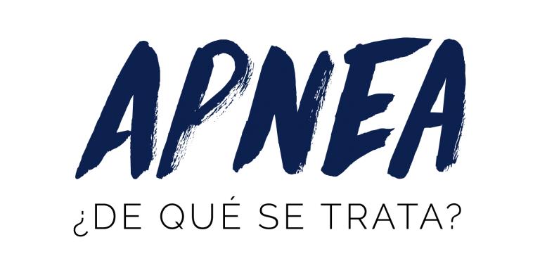

Apnea / freediving
La apnea o buceo libre o freediving, es cada vez más popular en todo el mundo. Tanto a nivel
recreativo como competitivo. La libertad, la relajación y la tranquilidad se mencionan a menudo como
razones para practicar el buceo libre. El buceo libre se hace a base de suspensión voluntaria de la
respiración, porque no se usan aparatos de respiración. Hacer una esquina de buceo durante el
snorkel, para poder ver más profundamente y más bajo el agua, es de hecho una forma de buceo libre.
Un practicante de buceo libre experimentado puede permanecer bajo el agua hasta 20-30 metros de
profundidad y durante unos 2 minutos y hacer esto tan a menudo como quiera.
A nivel competitivo existen tres variantes. La primera variante es la estática, hay que suspender la
respiración bajo el agua el mayor tiempo posible. ¡El récord mundial es actualmente de más de 11
minutos y 35 segundos! En la segunda variante hay que nadar lo más lejos posible horizontalmente con
o sin la ayuda de aletas. La tercera variante se trata de llegar lo más profundo posible en una sola
respiración (con o sin ayudas como pesas o aletas). Las profundidades y distancias de los
profesionales son simplemente espectaculares. Por ejemplo, el registro de profundidad en la
categoría No Limits es de 214 metros de distancia!